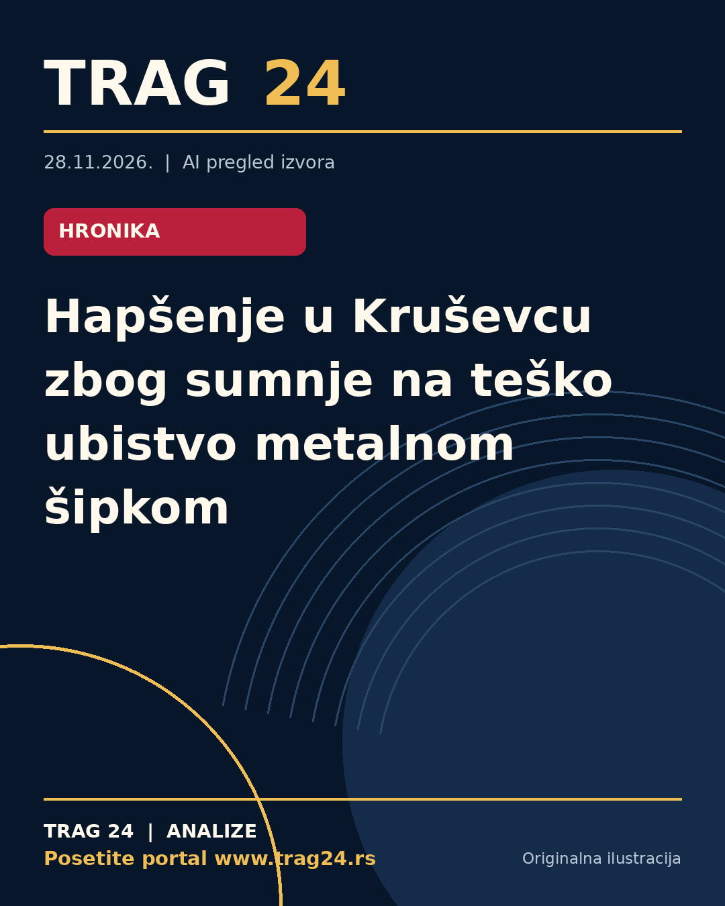

Hapšenje u Kruševcu zbog sumnje na teško ubistvo metalnom šipkom

ŠTA SE DOGODILO
Policija u Kruševcu uhapsila je R. M. (70) zbog sumnje da je, nakon svađe, metalnom šipkom izazvao smrt četrdesetsedmogodišnjeg muškarca kod koga je stanovao. Do nasilnog događaja je došlo sinoć, a muškarac je preminuo usled zadobijenih povreda.
HRONOLOGIJA
Događaj se desio tokom jučerašnjeg dana ili večeri u Kruševcu. Nakon intervencije policije, R. M. je uhapšen i zadržan do 48 sati po nalogu Višeg javnog tužilaštva u Kruševcu, koje je naložilo i obdukciju tela preminulog radi utvrđivanja tačnog uzroka smrti. Osumnjičeni će biti saslušan uz krivičnu prijavu.
ŠTA NAVODE IZVORI
Ministarstvo unutrašnjih poslova potvrđuje hapšenje i osumnjičenje za teško ubistvo, kao i činjenicu da je do smrti došlo nakon svađe. Policijski i tužilački organi sprovode dalje radnje na slučaju. Ne navode se dodatni detalji o okolnostima sukoba ili motivima.
ŠTA JE POTVRĐENO
Potvrđeno je hapšenje R. M. u Kruševcu pod sumnjom za teško ubistvo, kao i da je žrtva muškarac star 47 godina kod koga je osumnjičeni stanovao. Smrt je nastupila usled povreda koje je žrtva zadobila metalnom šipkom. Osumnjičenom je određeno zadržavanje i biće sproveden pred tužilastvo.
ŠTA NIJE POTVRĐENO
Nisu potvrđeni detalji o tačnom uzroku smrti pre smrti osim da je nastupila zbog povreda, kao ni motivi za napad. Nema informacija o eventualnim svedocima niti o prethodnim sukobima između osumnjičenog i preminulog.
ŠTA OSTАJE OTVORENO: Ostaje nepoznato kakav je tačno bio odnos između osumnjičenog i žrtve, šta je prethodilo svađi i detalji istrage. Rezultati obdukcije će dodatno rasvetliti uzrok smrti. Takođe, dalji tok istrage i eventualne pravne posledice su još neizvestni.
Izvori
- https://www.euronews.rs/srbija/aktuelno/254094/uhapsen-muskarac-u-krusevcu-zbog-sumnje-na-tesko-ubistvo/vest
- https://nova.rs/vesti/hronika/horor-u-krusevcu-muskarac-uhapsen-zbog-sumnje-da-je-metalnom-sipkom-ubio-cimera/
Ova analiza je pripremljena uz pomoć veštačke inteligencije na osnovu javno dostupnih izvora. Navodi izvora nisu nužno nezavisno potvrđeni.